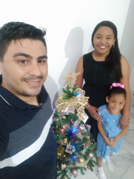

Quem sou eu
Sobre mim

Meu nome é Renato Abreu, sou técnico em Eletrotécnica desde 2011 e curso Engenharia Elétrica desde 2017. Irei me formar no início de 2022.
Trabalho no Rádio Observatório Espacial do Nordeste desde 2012. Sou técnico de manutenção.
Responsável pela manutenção e operação do Observatório trabalhando com diversos sistemas, desde softwares até engrenagens pesadas.
Como falar comigo?


Família
Conheça minha família

Sou casado com Vanesca Rodrigues desde 2007. Casamos no dia 13 de Outubro e moramos na mesma casa que nós mesmos construímos aos poucos com muito trabalho desde que casamos.
Temos uma linda filha, Maria Eduarda, que todos chamam de Duda. Ela nesceu em 2013 prematura, com 6 meses de gestação. Ficou 3 meses na UTI neo natal e veio pra casa em março de 2014. Ela nesceu no dia 20 de Dezembro de 2013.
Acabamos de comprar um apartamento e estamos sonhando em nos mudar pela primeira vez desde a formação da nossa família. Compramos o AP na planta e estamos aguardando receber em breve.
Descubra meus gostos musicais
Bandas que eu curto